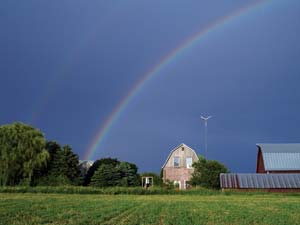

JOHN IVANKO
Inn Serendipity Bed and Breakfast in Browntown, Wis., uses a Bergey wind turbine for its power. The tower generates about 12,000 kilowatt-hours of electricity a year — more than the Inn's annual needs.